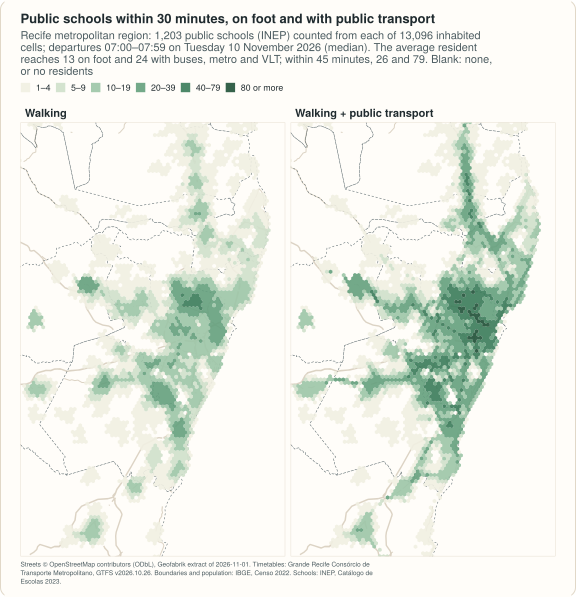

Example: the Recife metropolitan region by public transport¶
The Região Metropolitana do Recife is 14 municipalities and 3.7 million people on the coast of Pernambuco, Brazil. Its buses, of ten operators under one authority, the Grande Recife Consórcio de Transporte Metropolitano, meet the metro and the VLT (light rail) of CBTU at integrated terminals, and the consortium publishes the timetables of all of them as one GTFS feed. This example builds the region as one network, from that feed and from OpenStreetMap, counts the public schools within reach of every resident on foot and by public transport, and draws isochrones by mode from the centre of Recife.
It is the Python half of a larger example: the R article also measures what the rail lines add, how much a trip varies with the minute one leaves, the options of one trip, and the speeds the timetable assumes. The numbers printed here are the ones of that article; they were computed on 2026-11-13. It needs geopandas 1.0 or later and, to cut the street extract, osmium.

site/figures/rmr.R in the repository.The data¶
| Data | Source | Licence |
|---|---|---|
| Public transport | Grande Recife Consórcio de Transporte Metropolitano, GTFS feed at https://www.granderecife.pe.gov.br/gtfs/gtfs.zip, feed_version v2026.10.26 (files of 2026-10-26; 38 MB): 395 bus routes of ten operators and, of CBTU's Metrorec, 3 metro and 2 VLT routes; timetables only |
published by the consortium at that address; no licence is stated in the feed |
| Streets | OpenStreetMap, extract of the Nordeste region by Geofabrik, dated 2026-11-01 (445 MB, MD5 93318fcddd85a53e8386eaa93588847c) |
ODbL 1.0 |
| Municipal boundaries | IBGE, malhas municipais (API, version 3) | public data, IBGE |
| Population | IBGE, Censo Demográfico 2022, census tracts with their population, variable v0001 (44 MB for Pernambuco) |
public data, IBGE |
| Schools | INEP, Catálogo de Escolas 2023, with the coordinates of each school, as published by Ipea's geobr (schools_2023, 101 MB for Brazil) |
public data, INEP; geobr is MIT |
The feed is not in the repository and is not redistributed: the code below
uses a file granderecife-*.zip in the raw directory if there is one, or
else downloads the consortium's current file. That address always serves
the current version, so a later download is another network and gives other
numbers; the checksum printed identifies the file used here.
No fares
The feed has a price for each route and no rule for transfers: the integration at the terminals, where passengers change lines without paying again, is not in it. A fare structure made from the feed would charge every boarding, so this example measures time and leaves money out.
import datetime as dt
import gzip
import hashlib
import os
import shutil
import subprocess
import urllib.request
import zipfile
from pathlib import Path
import geopandas as gpd
import numpy as np
import pandas as pd
import shapely
from shapely.geometry import Polygon
import peabiru
data_dir = Path(os.environ.get("PEABIRU_EXAMPLE_DATA", "rmr-data"))
raw = data_dir / "raw"
raw.mkdir(parents=True, exist_ok=True)
def fetch(url, name=None):
dest = raw / (name or url.rsplit("/", 1)[1])
if not dest.exists():
part = dest.with_suffix(".part")
request = urllib.request.Request(url, headers={"User-Agent": "peabiru-docs-examples"})
with urllib.request.urlopen(request) as response, open(part, "wb") as out:
# IBGE's API sends its answer gzip-compressed, asked or not
gz = response.headers.get("Content-Encoding") == "gzip"
shutil.copyfileobj(gzip.GzipFile(fileobj=response) if gz else response, out)
part.rename(dest)
return dest
nordeste = fetch("https://download.geofabrik.de/south-america/brazil/nordeste-261101.osm.pbf")
tracts_file = fetch("https://ftp.ibge.gov.br/Censos/Censo_Demografico_2022/"
"Agregados_por_Setores_Censitarios/malha_com_atributos/"
"setores/gpkg/UF/PE/PE_setores_CD2022.gpkg")
schools_file = fetch("https://www.ipea.gov.br/geobr/data_gpkg/schools/2023/schools_2023.gpkg")
feeds = sorted(raw.glob("granderecife-*.zip"))
if feeds:
feed = feeds[-1]
else:
download = fetch("https://www.granderecife.pe.gov.br/gtfs/gtfs.zip")
with zipfile.ZipFile(download) as z, z.open("feed_info.txt") as f:
version = pd.read_csv(f)["feed_version"][0]
feed = download.rename(raw / f"granderecife-{version}.zip")
print(feed.name, f"{feed.stat().st_size / 1e6:.1f} MB, sha256",
hashlib.sha256(feed.read_bytes()).hexdigest()[:16])
with zipfile.ZipFile(feed) as z:
routes = pd.read_csv(z.open("routes.txt"))
print(routes["route_type"].map({0: "VLT", 1: "metro", 3: "bus"}).value_counts().to_dict(),
"frequencies.txt" in z.namelist())
granderecife-v2026.10.26.zip 38.3 MB, sha256 1b0657fb8f6bcb70
{'bus': 395, 'metro': 3, 'VLT': 2} False
The network¶
The streets are cut from the regional extract with the 14 municipalities and
3 km around them. (Neighbouring boundaries do not share their vertices
exactly: snapped to a grid of 1 cm, they join without slivers.)
build_network() reads the directory with the cut and the feed.
utm = 31985 # SIRGAS 2000 / UTM zone 25S, in metres
threads = 4 # of this laptop's ten cores
# the municipalities of the region (IBGE codes): Recife, Olinda, Jaboatão dos
# Guararapes, Paulista, Camaragibe, São Lourenço da Mata, Cabo de Santo
# Agostinho, Ipojuca, Moreno, Igarassu, Abreu e Lima, Itapissuma, Ilha de
# Itamaracá and Araçoiaba
codes = ["2611606", "2609600", "2607901", "2610707", "2603454", "2613701", "2602902",
"2607208", "2609402", "2606804", "2600054", "2607752", "2607604", "2601052"]
def boundary_of(code):
url = ("https://servicodados.ibge.gov.br/api/v3/malhas/municipios/" + code +
"?formato=application/vnd.geo+json&qualidade=maxima")
return gpd.read_file(fetch(url, f"{code}.geojson")).to_crs(utm).make_valid().union_all()
municipalities = gpd.GeoSeries([boundary_of(c) for c in codes], index=codes, crs=utm)
municipalities = gpd.GeoSeries(shapely.set_precision(municipalities.values, 0.01),
index=codes, crs=utm).make_valid()
region = municipalities.union_all()
folder = data_dir / "rmr" / "network"
folder.mkdir(parents=True, exist_ok=True)
polygon = data_dir / "rmr" / "cut.geojson"
# 30 segments per quarter circle, as sf's st_buffer()
gpd.GeoSeries([region.buffer(3000, quad_segs=30)], crs=utm).to_crs(4326).to_file(polygon)
pbf = folder / "rmr.osm.pbf"
subprocess.run(["osmium", "extract", "--overwrite", "-p", str(polygon), str(nordeste),
"-o", str(pbf)], check=True)
shutil.copyfile(feed, folder / feed.name)
network = peabiru.build_network(folder, n_threads=threads)
print(f"{region.area / 1e6:,.0f} km2, {pbf.stat().st_size / 1e6:.1f} MB")
print(network.info())
print(len(peabiru.get_gtfs_errors(network)), "GTFS errors")
print(peabiru.check_transit_availability(network, dates=dt.date(2026, 11, 10)).to_string(index=False))
2,763 km2, 21.2 MB
{'vertices': 153798, 'edges': 395862, 'elevation': 'NONE', 'feeds': ['granderecife-v2026.10.26'], 'stops': 7238, 'patterns': 1215, 'services': 1143, 'frequencies': False}
0 GTFS errors
date total_services active_services pct_active
2026-11-10 1143 395 0.345582
The feed has no error. Few of its services run because it keeps one for each route and kind of day, and on a Tuesday the weekday ones are due. The analysis is of Tuesday 10 November 2026, leaving at each minute from 07:00 to 07:59; a travel time is the median of those 60 departures.
Residents and schools¶
The census population goes on hexagonal cells 500 m apart, by the share of each tract's area that falls in each cell, and every cell is routed from its centre, as in the Recife and Caruaru example, which explains these steps. The schools are the public ones in operation in the area cut.
def hex_grid(area, spacing=500):
xmin, ymin, xmax, ymax = area.bounds
h = spacing * np.sqrt(3) / 2
r = spacing / np.sqrt(3)
k = np.radians(30 + 60 * np.arange(7)) # pointy side up
cells = []
for j in range(-1, int(np.ceil((ymax - ymin) / h)) + 2):
for i in range(-1, int(np.ceil((xmax - xmin) / spacing)) + 2):
x = xmin + i * spacing + (j % 2) * spacing / 2
y = ymin + j * h
cells.append(Polygon(zip(x + r * np.cos(k), y + r * np.sin(k))))
cells = gpd.GeoSeries(cells, crs=utm)
cells = cells[cells.intersects(area)].reset_index(drop=True)
return gpd.GeoDataFrame({"id": np.arange(1, len(cells) + 1)}, geometry=cells)
tracts = gpd.read_file(tracts_file, columns=["v0001"],
where="CD_MUN IN (" + ", ".join(f"'{c}'" for c in codes) + ")").to_crs(utm)
tracts["geometry"] = tracts.make_valid()
tracts["tract_area"] = tracts.area
cells = hex_grid(region)
parts = gpd.overlay(cells, tracts, how="intersection", keep_geom_type=True)
parts["people"] = parts["v0001"] * parts.area / parts["tract_area"]
cells["population"] = cells["id"].map(parts.groupby("id")["people"].sum()).fillna(0)
centres = cells.centroid.to_crs(4326)
cells["lon"], cells["lat"] = centres.x.round(6), centres.y.round(6)
cells["id"] = cells["id"].astype(str)
cells = cells[cells["population"] > 0]
area = gpd.read_file(polygon).to_crs(4674).union_all()
s = gpd.read_file(
schools_file, bbox=area.bounds, columns=["code_school", "name_school", "name_muni"],
where="admin_category = 'Pública' AND service_restriction = "
"'ESCOLA EM FUNCIONAMENTO E SEM RESTRIÇÃO DE ATENDIMENTO'")
s = s[~s.geometry.is_empty & s.intersects(area)]
schools = pd.DataFrame({"id": s["code_school"].astype(str), "lon": s.geometry.x,
"lat": s.geometry.y, "schools": 1}).reset_index(drop=True)
print(f"{len(cells):,} cells, {cells['population'].sum():,.0f} people, {len(schools):,} schools")
13,096 cells, 3,730,664 people, 1,203 schools
Schools within reach¶
Cumulative access from every inhabited cell: the public schools reached within 30 and within 45 minutes, on foot and by public transport, and the average over the residents.
departure = dt.datetime(2026, 11, 10, 7, 0)
origins = cells[["id", "lon", "lat"]]
people = cells.set_index("id")["population"]
rows = {}
for name, mode in [("walk", "WALK"), ("transit", ["WALK", "TRANSIT"])]:
a = peabiru.accessibility(network, origins, schools, opportunities_colnames="schools",
mode=mode, departure_datetime=departure, time_window=60,
percentiles=50, cutoffs=[30, 45], max_trip_duration=60,
n_threads=threads, progress=False)
a["population"] = people.loc[a["id"]].to_numpy()
rows[name] = {f"{cutoff:.0f} min": round(np.average(g["accessibility"], weights=g["population"]), 1)
for cutoff, g in a.groupby("cutoff")}
print(pd.DataFrame(rows))
walk transit
30 min 12.8 24.4
45 min 26.5 79.4
The average resident has 13 public schools within half an hour's walk and 24 within half an hour by public transport; with 45 minutes, 26 and 79.

Isochrones from the centre¶
From Praça do Derby, between the centre of Recife and its west and north:
74 of the feed's 400 routes stop within 400 m of the square on a weekday.
isochrone()
traces the areas on a grid of points, and the points just off the coast are
reached from the seafront, so the polygons are cut at the coast (the
municipal boundaries) before their area is measured. Walking is at 3.6 km/h
and cycling at 12 km/h on streets of low traffic stress, the defaults;
driving is at the speed limits, with no congestion.
derby = pd.DataFrame({"id": ["Praça do Derby"], "lon": [-34.8990], "lat": [-8.0570]})
rows = {}
for name, mode in [("walk", "WALK"), ("bicycle", "BICYCLE"), ("car", "CAR"),
("transit", ["WALK", "TRANSIT"])]:
iso = peabiru.isochrone(network, derby, mode=mode, cutoffs=[15, 30, 45], zoom=11,
departure_datetime=departure, time_window=60, n_threads=threads)
# the polygons come as traced, which can touch themselves: made valid first
on_land = iso.to_crs(utm).make_valid().intersection(region)
rows[name] = {f"{minutes:.0f} min": round(km2, 1)
for minutes, km2 in zip(iso["isochrone"], on_land.area / 1e6)}
print(pd.DataFrame(rows).T)
45 min 30 min 15 min
walk 15.2 6.6 1.5
bicycle 43.5 16.4 2.1
car 1453.0 618.4 105.9
transit 108.1 34.8 3.8
In 45 minutes public transport reaches 108 km² of land, cycling 44 and walking 15; a car in free-flowing traffic reaches 1,453 km², which no car does at 07:00.
What is measured, and what is not¶
- Scheduled times, not observed ones. The timetable of the feed, as published. Its buses are scheduled slower at the peaks (15 km/h at 07:00 against 25 km/h at 04:00: the R article measures it), but delays, bunching, crowding and trips that do not run are not in it.
- One day, one hour: departures from 07:00 to 07:59 on Tuesday 10 November 2026.
- No fares: the feed has no rule for the integration at the terminals.
- Rail included: the metro and the VLT are in the feed with their
timetables.
mode=["WALK", "BUS"]leaves them out. - Flat ground: no elevation raster. The terrain example shows how to add one.
- Driving is free flow, an upper bound drawn for comparison.
- Cells, not addresses: every trip starts at the centre of a cell 500 m from its neighbours; schools without coordinates in the catalogue are left out.
Sources¶
Timetables: Grande Recife Consórcio de Transporte Metropolitano, GTFS feed
v2026.10.26, as published at https://www.granderecife.pe.gov.br/gtfs/gtfs.zip.
Map data © OpenStreetMap contributors, under the ODbL. Boundaries and
population © IBGE (Censo 2022). Schools: INEP, Catálogo de Escolas 2023,
through geobr.